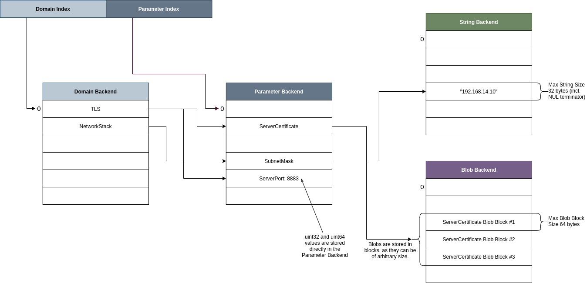
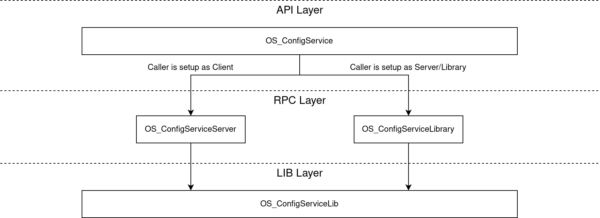
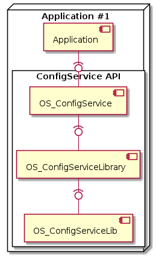
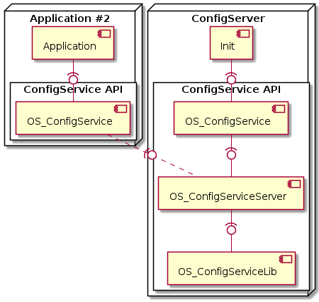

ConfigService API¶
Overview¶
The ConfigService can be deployed as a centralized configuration database for all system components and applications. The hierarchical configuration database managed by this service can store the settings for any application or system component that opts to use this service. Instead of having various applications or system component-specific configuration formats that additionally store the corresponding values in different locations, this service offers a standardized way of storing and preparing all the relevant settings in one place.
The following sections will highlight the concepts and architecture of the ConfigService, as well as the different options to utilize this service in applications and system components. The required initialization process will be demonstrated with various code examples. Finally, a reference to a TRENTOS system will be provided that showcases the usage.
Concepts¶
The following concepts are based on the assumption that the system is static and no applications are added or removed at runtime. All relevant configuration parameters of the system are well known at image creation time.
Handles: The ConfigService API context can be instantiated and managed via handles.
Persisting the data: Details about how the service persists the configuration data are hidden from the caller of the API. Depending on the intended system requirements, the ConfigService can either store the configuration database in a memory backend or make use of a file system, if it has access to a StorageServer instance.
Configuration Parameter Types: The service supports four different types of storing the parameter values.
uint32
uint64
string (which can have a size of up to 32 bytes, including NUL terminator)
blob (which can have an arbitrary size and is broken down into blocks of 64 bytes)
Instantiation modes: The ConfigService API can be integrated into three different ways.
As a Library: In this setup, all calls to the ConfigService API are mapped to a local configuration instance of the underlying Library.
As a Client: In this setup, all calls to the ConfigService API are mapped to an RPC, which in turn is received by an RPC Server that executes the function with its own Library instance – but in a separate component.
As a Server: In this setup, all calls to the ConfigService API are received through RPCs from the connected clients and are in turn executed on the component’s own local instance of the configuration Library.
Configuration Structure¶
As the following image shows, the parameters managed by the ConfigService are grouped together in specific domains. Each domain requires a unique name under which it can be found and identified. Depending on how the system using the ConfigService is comprised (possibly of two very similar apps or components), the grouping of parameters under domains offers an easy way to avoid parameter naming collision.
Because the configuration database is managed by this one service, all calls made to the API in a Client-Server Model will be serialized and dealt with in sequential order, thus maintaining the overall consistency of the stored configuration data and avoiding possible race conditions between different clients fetching or editing the settings.
In order to retrieve a parameter value through the API, a system component or an application needs to be able to provide two things: the domain name and the parameter name.

Configuration Backend¶
In its current implementation, the service offers two different ways of setting up the configuration backend to store the settings. It can either use a memory backend of the component hosting the Library instance (simply by allocating memory on the heap of the component, large enough to store all the parameters) or utilize a file system backend by connecting to a storage driver component that implements the SDK’s storage interface. The usage of a file system backend opens up the possibility to inject the application and system settings through the Configuration Provisioning Tool that creates a provisioned image in a compatible format which then can be placed at a location that can be accessed through a connected storage driver.
Access Management¶
A single ConfigService instance makes use of a single database to store all the configuration parameters in. This means that in a system setup that features a single ConfigServer component managing the available configuration database, the clients connected to this server can access all the parameters stored in this database. Restricting the read and write access to the stored parameters is currently not implemented on a client basis but instead needs to be set globally (e.g. through the Configuration Provisioning Tool).
If a clear access separation between the clients is required for the intended system design, it is recommended to either include the ConfigService library directly into the components that should not share the database with other components, or alternatively adding an additional server component to the system.
Architecture¶
The implementation can be divided into three layers:
API layer: Implements the API functions as exported via the central API header.
RPC layer: Implements the RPC functionality, i.e., the RPC Client and RPC Server.
LIB layer: Implements the actual functionality of the ConfigService and thereby takes care of reading and writing the configuration parameters into the respective memory or file system backend.

Implementation¶
Layout if Used as a Library¶
If included as a Library, the ConfigService API will make use of the local instance of the Library and use that instance to execute any calls made to the API.

Layout if Used in a Client-Server Model¶
All API calls made by a component built as a client will be redirected into RPCs to a remote instance of the Library. This setup will require another component to act as the configuration Server accepting the RPCs. The initialization of the configuration backend is the responsibility of the Server component in this model. Due to the additional overhead of RPC communication between RPC Client and RPC Server, this mode of operation is expected to be slower.

Usage¶
The following section will provide examples of how the API can be instantiated in a TRENTOS system.
Declaration of API Library in CMake¶
As already explained above, the ConfigService can be integrated in three
different ways with the following define flags that need to be set in
the CMakeLists.txt file:
Define |
Build option |
|---|---|
- |
As a Library |
OS_CONFIG_SERVICE_CAMKES_SERVER |
As a CAmkES Server |
OS_CONFIG_SERVICE_CAMKES_CLIENT |
As a CAmkES Client |
If the Build option is “As a Library” or “As a CAmkES Server” it is also necessary to choose a backend option:
Define |
Build option |
|---|---|
OS_CONFIG_SERVICE_BACKEND_FILESYSTEM |
Memory Backend |
OS_CONFIG_SERVICE_BACKEND_MEMORY |
File System Backend |
If the component is built using a file system backend, it is recommended to also take a look at the documentation of the FileSystem API.
The following libraries have to be linked in the declaration of the component:
os_core_api
lib_debug
os_configuration
If the file system backend is selected, this also needs to be linked with
os_filesystem.
Example¶
Instantiation of API in CMake¶
A possible CMakeLists.txt configuration for a CAmkES ConfigServer
component with a file system backend would result in:
DeclareCAmkESComponent(
ConfigServer
SOURCES
...
C_FLAGS
...
# indicates the use of the filesystem backend
-DOS_CONFIG_SERVICE_BACKEND_FILESYSTEM
# indicates a CAmkES configuration server is being built
-DOS_CONFIG_SERVICE_CAMKES_SERVER
LIBS
...
os_core_api
lib_debug
os_configuration
os_filesystem
)
A client component will have to only include the relevant lib and set the correct define:
DeclareCAmkESComponent(
ExampleClient
SOURCES
...
C_FLAGS
...
-DOS_CONFIG_SERVICE_CAMKES_CLIENT
LIBS
...
os_core_api
os_configuration
)
Integrating the CAmkES Interface File When Building a Server Component¶
The SDK already provides the necessary files (os_core_api) to set up an
interface for the ConfigServer built as a CAmkES component. Import the
if_OS_ConfigService.camkes interface in the CAmkES component file of the
ConfigServer component and name the procedure
if_OS_ConfigService OS_ConfigServiceServer (this way it will be automatically
linked to functions of the library implementing the RPC calls) and also define a
dataport for the clients to connect to as seen in this example:
import <if_OS_ConfigService.camkes>;
component ConfigServer {
provides if_OS_ConfigService OS_ConfigServiceServer;
//-------------------------------------------------
// dataports for clients
dataport Buf client01_dp;
dataport Buf client02_dp;
}
A client would connect to this ConfigServer component by also integrating the interface and setting a dataport:
import <if_OS_ConfigService.camkes>;
component Client {
control;
uses if_OS_ConfigService OS_ConfigServiceServer;
dataport Buf configServer_dp;
}
Using the API in C¶
When initializing the configuration instance with a file system backend, it is required to first initialize the file system handle that the ConfigService makes use of. The initialization process of this can be found in the documentation of the FileSystem API and won’t be covered in the following example.
Using the ConfigService API requires to include only one header:
#include "OS_ConfigService.h"
To initialize the local configuration Library in a Server or Library setup, the first step is to obtain the pointer to the local instance.
// Get the pointer to the local configuration instance
OS_ConfigServiceLib_t* configLib = OS_ConfigService_getInstance();
If the mounted partition already contains a complete configuration file, then these are the steps to follow to initialize this file and to be able to write and retrieve configuration parameters from it.
Warning: Beware that the defined file names in the example need to be the same ones that were used to create the provisioned configuration image with the Configuration Provisioning Tool, otherwise the initialization process will not be able to find the files.
Initialize the backends:
/* Defines -------------------------------------------------------------------*/
#define PARAMETER_FILE "PARAM.BIN"
#define DOMAIN_FILE "DOMAIN.BIN"
#define STRING_FILE "STRING.BIN"
#define BLOB_FILE "BLOB.BIN"
// initialized handle for the filesystem
// (the init process can be found in the documentation of the filesystem)
OS_FileSystem_Handle_t hFs;
OS_ConfigServiceBackend_t parameterBackend;
OS_ConfigServiceBackend_t domainBackend;
OS_ConfigServiceBackend_t stringBackend;
OS_ConfigServiceBackend_t blobBackend;
OS_ConfigServiceBackend_FileName_t name;
// small helper function to set the filename
static void initializeName(char* buf, size_t bufSize, char const* name)
{
memset(buf, 0, bufSize);
strncpy(buf, name, bufSize - 1);
// domain backend
initializeName(name.buffer, OS_CONFIG_BACKEND_MAX_FILE_NAME_SIZE, DOMAIN_FILE);
OS_ConfigServiceBackend_initializeFileBackend(&domainBackend, name, hFs);
// parameter backend
initializeName(name.buffer, OS_CONFIG_BACKEND_MAX_FILE_NAME_SIZE,
PARAMETER_FILE);
OS_ConfigServiceBackend_initializeFileBackend(¶meterBackend, name, hFs);
// string parameter backend
initializeName(name.buffer, OS_CONFIG_BACKEND_MAX_FILE_NAME_SIZE, STRING_FILE);
OS_ConfigServiceBackend_initializeFileBackend(&stringBackend, name, hFs);
// blob parameter backend
initializeName(name.buffer, OS_CONFIG_BACKEND_MAX_FILE_NAME_SIZE, BLOB_FILE);
OS_ConfigServiceBackend_initializeFileBackend(&blobBackend, name, hFs);
}
The backend in the configuration library instance is finally initialized with the different parameter types:
OS_ConfigServiceLib_Init(
configLib,
¶meterBackend,
&domainBackend,
&stringBackend,
&blobBackend
);
Up to this point, the described initialization process refers to components building the ConfigService as a Library or as a Server. The initialization for components acting as Clients and connecting to a remote configuration instance only requires a handle to be able to operate the API:
#include "OS_ConfigService.h"
OS_ConfigService_ClientCtx_t ctx =
{
.dataport = OS_DATAPORT_ASSIGN(configServer_dp)
};
OS_ConfigServiceHandle_t hConfig;
//Create remote handle of the ConfigServer API.
OS_ConfigService_createHandleRemote(&ctx, &hConfig);
If the configuration lib is run locally in the component, it is required to create a local handle:
OS_ConfigServiceHandle_t hConfig;
//Open a local handle of the ConfigServer API.
OS_ConfigService_createHandleLocal(&hConfig);
A Further Example of Resources¶
To get a better understanding of how the ConfigService API can be utilized in a system, it is recommended to take a look at the IoT Demo, which is part of this SDK. This demo system contains a ConfigService Server component which sets up the initial file system backend with a provisioned image from the Configuration Provisioning Tool. Several components in this demo are connected to this ConfigService server as clients and fetch their settings through it. The system setup and the overview of the system architecture for this demo can be found in the corresponding IoT Demo App for QEMU documentation.